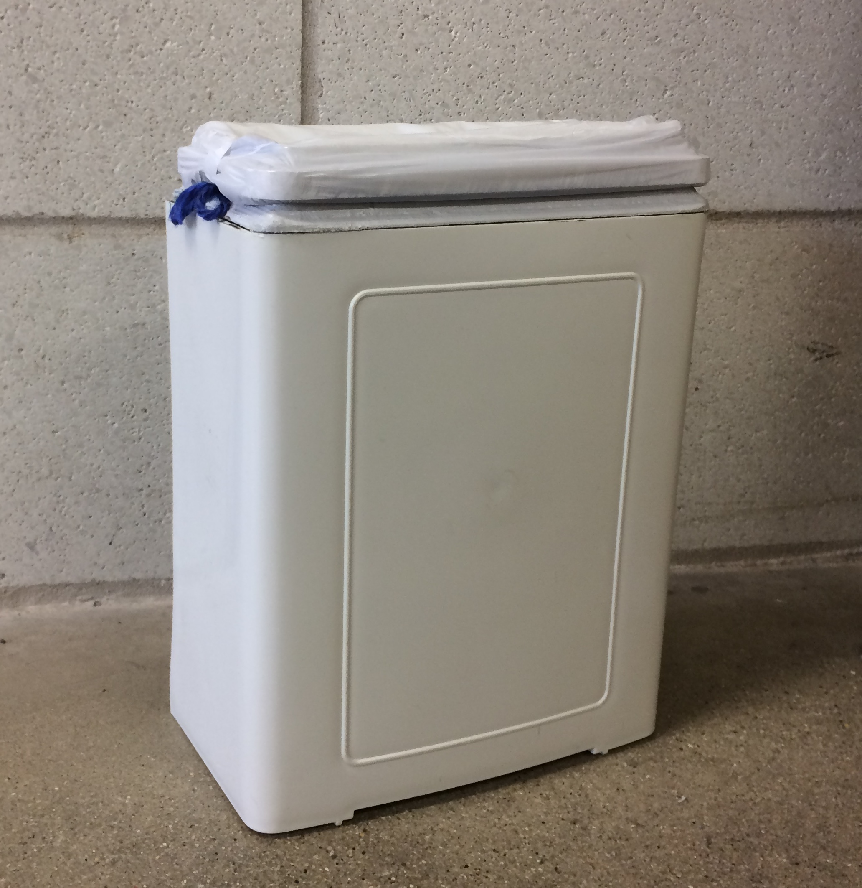
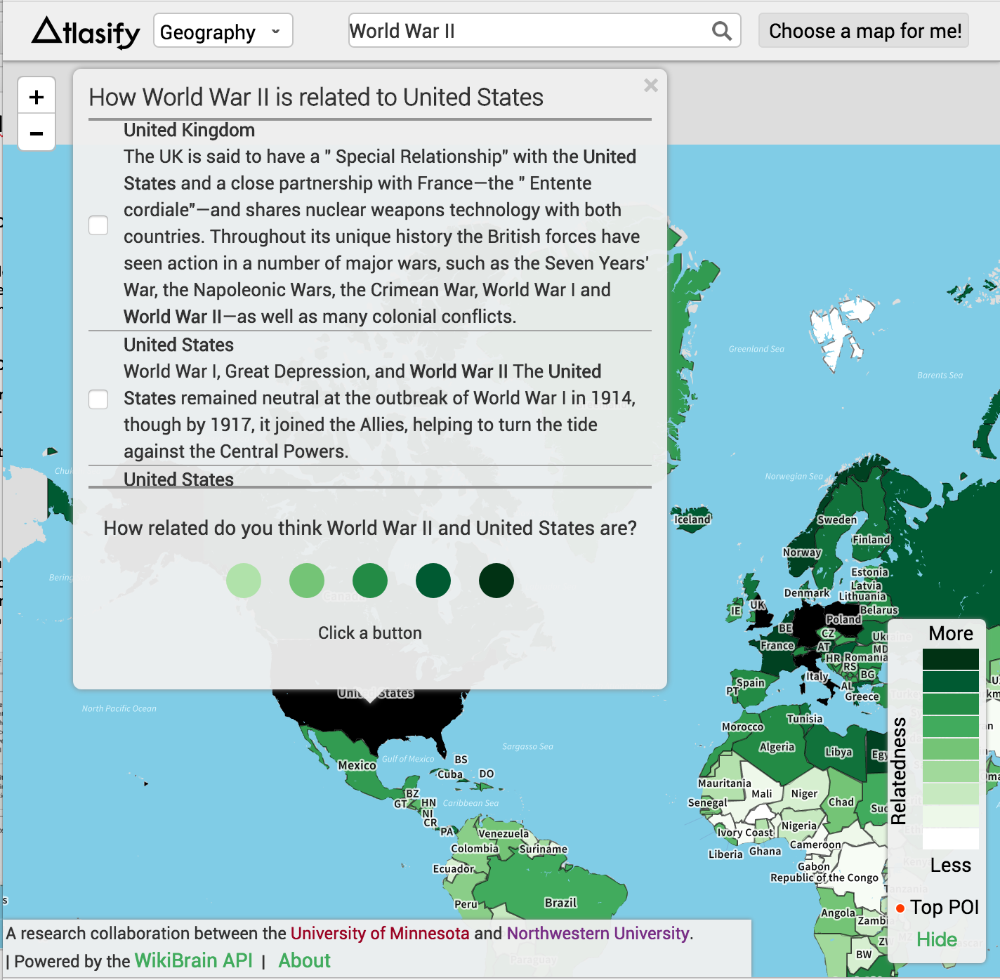
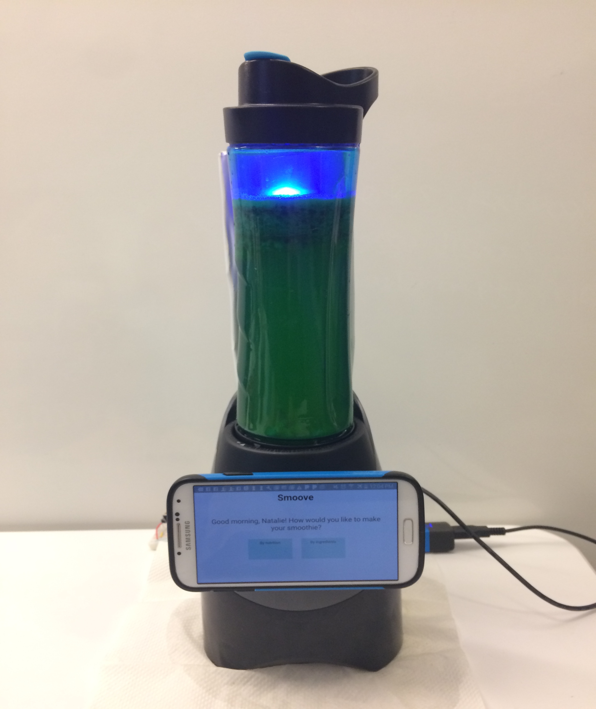
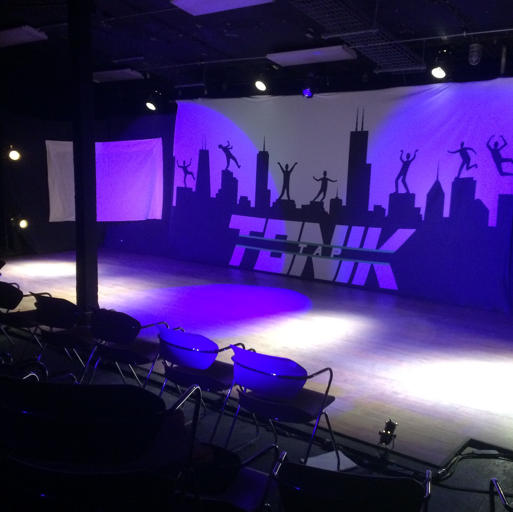
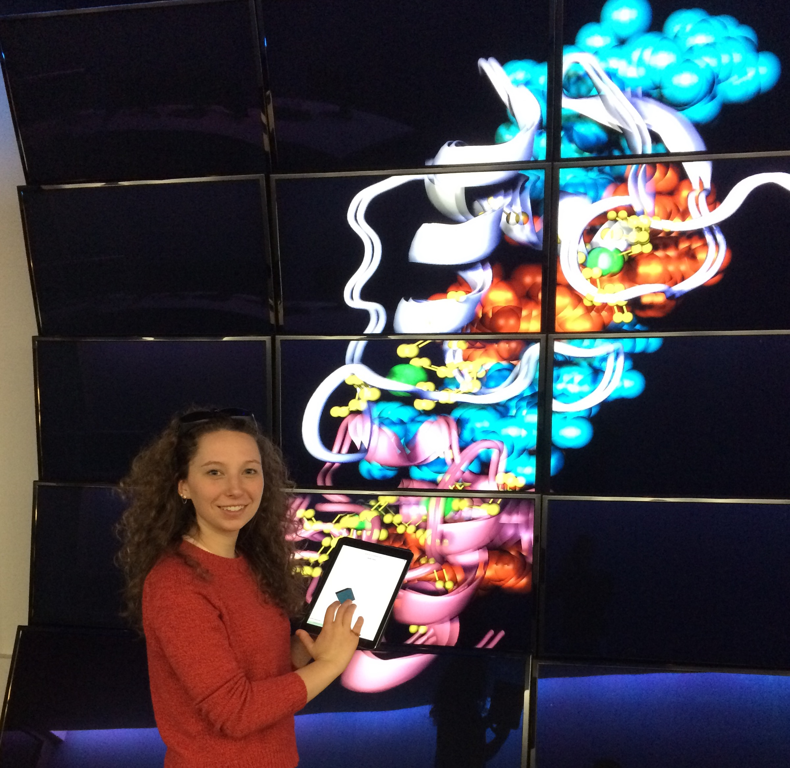

Caroline Grace Alexander

Building a Novel Product
UX Design

ML and UI Improvements

Building a Physical and Digital Product

Lighting Design
UX Design

Tech Team PM

UI Designer
Software Engineer
Lockheed Martin
Database Design
US Patent Office
UX Design
US Patent Office
UX Design